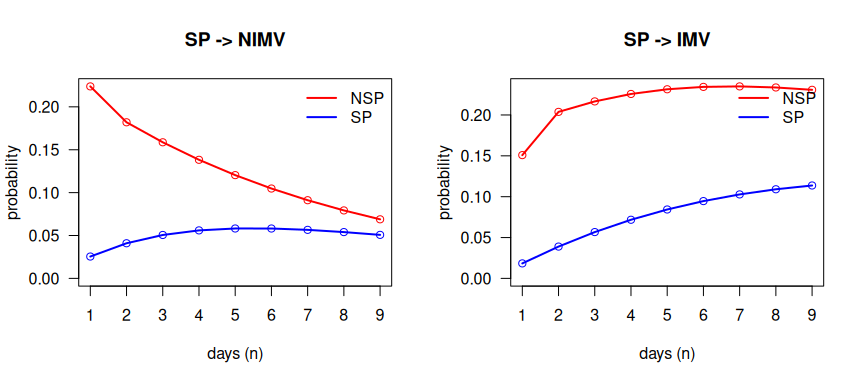
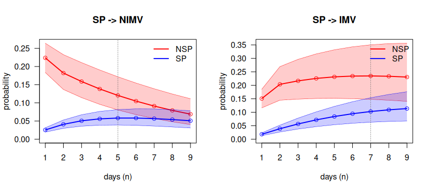
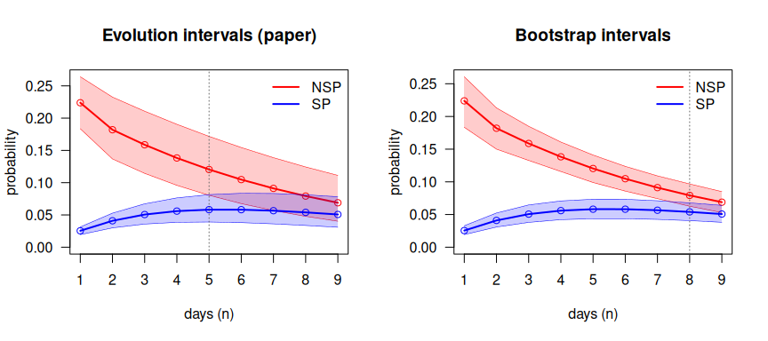

Reproducing the DIVINE analysis of the methods paper
João Carmezim
Source:vignettes/paper.Rmd
paper.RmdThis vignette reproduces, step by step, the real-data analysis of
Najera-Zuloaga, J., Besalú, M. and Gómez Melis, G. (2025). Second-order Markov multistate models: nonparametric estimation and inference. Manuscript submitted for publication.
with mstate2. Each step names the part of the paper it
reproduces, the function that does it and the result to compare. A final
checklist compares the package output with the published values. The
general use of every function is explained in
vignette("mstate2").
| Paper | What it shows | Function | Section here |
|---|---|---|---|
| Data | daily panel of the DIVINE cohort |
sojourn_to_panel(), rnd()
|
2 |
| Counting processes | , | prep2() |
3 |
| Eq. 9, Theorem 5, Corollaries 1–2 | relative probability estimator (RPE), variance, CI | P2est() |
4 |
| Table 2 | 1-step probabilities from severe pneumonia | P2est() |
4 |
| Eq. 6 | extended Chapman–Kolmogorov relation | ckequations() |
5 |
| Section 6.3, Figures 4–5 | for how long the previous state matters |
compare2(), overlap_step()
|
6 |
| Section 5 | simulation from a second-order model | simulate2() |
8 |
Notation: , where is the state at the previous time, the state at the current time and the state at the next time.
1. Data
The DIVINE cohort has 2076 patients hospitalised with COVID-19. The
multistate extract is distributed by the DIVINE project (msm_data/MSM_Data.RData)
and is not included in mstate2: download it and load
it.
MSM |> summarise(patients = n(), discharged = sum(disch.s), died = sum(death.s))
#> patients discharged died
#> 1 2076 1858 218The states are non-severe and severe pneumonia (NSP,
SP), non-invasive and invasive mechanical ventilation
(NIMV, IMV), recovery after respiratory
support (Recov), discharge (Disch) and death
(Death). For each patient, MSM records the
days spent in each state (t.nosp, t.sp,
t.nimv, t.mv, t.recov) and how
follow-up ended (disch.s, death.s).
2. Step 1: the daily panel
The methods of the paper are in discrete time: one observation per
patient and day. sojourn_to_panel() expands the days spent
in each state into one row per day, in the visiting order NSP → SP →
NIMV → IMV → Recov, and appends the final state.
estados <- c("NSP", "SP", "Recov", "NIMV", "IMV", "Disch", "Death")
panel <- sojourn_to_panel(MSM, id = "id",
segments = c(NSP = "t.nosp", SP = "t.sp", NIMV = "t.nimv", IMV = "t.mv", Recov = "t.recov"),
absorbing = c(Disch = "disch.s", Death = "death.s"))
dim(panel)
#> [1] 27736 3Durations are recorded in half days. They are rounded with
rnd(), which sends 0.5 to 1. Base R’s round()
sends 0.5 to 0, deletes the half-day stays in severe pneumonia and does
not reproduce Table 2:
3. Step 2: the second-order counting processes
prep2() forms, for every patient, the triples of
consecutive days
and counts the transitions
and the patients at risk
.
d <- prep2(panel, states = estados)
d
#> <msm2data> second-order counting processes
#> subjects : 2076
#> observed triples: 23584
#> time range : 0 - 138
#> states (7) : NSP, SP, Recov, NIMV, IMV, Disch, Death
#> absorbing : Disch, Death
#> distinct (h,j) : 12The 23 584 triples are the 27 736 rows of the panel minus the first two days of each patient, which have no complete history. The 12 histories are the 5 stays in the same state and the 7 changes of state observed in the data.
4. Step 3: Table 2, the relative probability estimator
The RPE (Eq. 9) pools all the transitions and all the patient-days at risk of each history:
with Wald 95% confidence intervals (Corollaries 1–2).
fit <- P2est(d)
table2 <- fit$estimate |>
filter(j == "SP", l %in% c("NIMV", "IMV")) |>
select(h, j, l, p, se, lower, upper, n.trans, at.risk)
table2
#> h j l p se lower upper n.trans at.risk
#> 1 NSP SP NIMV 0.22384 0.020560 0.18355 0.26414 92 411
#> 2 NSP SP IMV 0.15085 0.017654 0.11625 0.18545 62 411
#> 3 SP SP NIMV 0.02549 0.003051 0.01951 0.03147 68 2668
#> 4 SP SP IMV 0.01837 0.002599 0.01327 0.02346 49 2668Comparison with Table 2 of the paper:
published <- c(0.224, 0.151, 0.025, 0.018) # NSP->NIMV, NSP->IMV, SP->NIMV, SP->IMV
table2 |>
transmute(history = paste(h, j, sep = " -> "), to = l,
paper = published, mstate2 = round(p, 3)) |>
mutate(match = paper == mstate2)
#> history to paper mstate2 match
#> 1 NSP -> SP NIMV 0.224 0.224 TRUE
#> 2 NSP -> SP IMV 0.151 0.151 TRUE
#> 3 SP -> SP NIMV 0.025 0.025 TRUE
#> 4 SP -> SP IMV 0.018 0.018 TRUEThe four probabilities match to the three decimals published. A patient in severe pneumonia who was in non-severe pneumonia at the previous time (who has just worsened) moves to non-invasive ventilation the next day with probability 0.224; one who was already in severe pneumonia, with probability 0.025. The 95% intervals of the two histories do not overlap, for NIMV or for IMV:
table2 |>
group_by(to = l) |>
summarise(separated = lower[h == "NSP"] > upper[h == "SP"])
#> # A tibble: 2 × 2
#> to separated
#> <fct> <lgl>
#> 1 NIMV TRUE
#> 2 IMV TRUEA first-order model, which ignores the state at the previous time, would give the two patients the same probability.
5. Step 4: n-step prediction (extended Chapman–Kolmogorov)
The extended Chapman–Kolmogorov relation (Eq. 6) gives the
probability of being in each state
days later, given the states at the previous and the current time:
.
ckequations() computes it exactly by treating the pair of
consecutive states as a first-order chain.
For a patient in SP at the current time who was in NSP at the previous time:
round(ckequations(fit, h = "NSP", j = "SP", nsteps = 9), 3)
#> NSP SP Recov NIMV IMV Disch Death
#> [1,] 0 0.616 0.007 0.224 0.151 0.000 0.002
#> [2,] 0 0.532 0.067 0.182 0.204 0.001 0.015
#> [3,] 0 0.460 0.132 0.159 0.217 0.005 0.028
#> [4,] 0 0.398 0.183 0.138 0.226 0.015 0.040
#> [5,] 0 0.344 0.220 0.120 0.231 0.032 0.052
#> [6,] 0 0.298 0.247 0.105 0.234 0.054 0.063
#> [7,] 0 0.257 0.264 0.091 0.235 0.079 0.074
#> [8,] 0 0.222 0.275 0.079 0.234 0.106 0.084
#> [9,] 0 0.192 0.279 0.069 0.231 0.135 0.094Each row is the distribution of the state on day and sums to 1.
6. Step 5: for how long does the previous state matter? (Section 6.3)
compare2() computes the
-step
curves for the two histories, NSP → SP and SP → SP, with the
evolution intervals of the paper, obtained by
propagating the lower and upper limits of the 1-step intervals.
overlap_step() returns the first day on which the two
intervals overlap: from then on, the state at the previous time no
longer changes the prediction significantly.
cmp_nimv <- compare2(fit, h = c("NSP", "SP"), j = "SP", l = "NIMV", nsteps = 9)
cmp_imv <- compare2(fit, h = c("NSP", "SP"), j = "SP", l = "IMV", nsteps = 9)
summary(cmp_nimv)
#> Trajectory comparison (RPE, 95% evolution intervals)
#> target 'NIMV' via current state 'SP'; preceding: NSP, SP
#> intervals first overlap at step 5 (time s = 6); significant for the first 4 step(s).
summary(cmp_imv)
#> Trajectory comparison (RPE, 95% evolution intervals)
#> target 'IMV' via current state 'SP'; preceding: NSP, SP
#> intervals first overlap at step 7 (time s = 8); significant for the first 6 step(s).These are the curves of Figures 4–5 of the paper. Without intervals
(bounds = FALSE), the two histories start far apart and
converge:
op <- par(mfrow = c(1, 2))
plot(compare2(fit, c("NSP", "SP"), "SP", "NIMV", bounds = FALSE),
dualaxis = FALSE, xlab = "days (n)", main = "SP -> NIMV")
plot(compare2(fit, c("NSP", "SP"), "SP", "IMV", bounds = FALSE),
dualaxis = FALSE, xlab = "days (n)", main = "SP -> IMV")
plot of chunk figure-curves
par(op)With evolution intervals; the dotted line marks the first overlap:
op <- par(mfrow = c(1, 2))
plot(cmp_nimv, dualaxis = FALSE, xlab = "days (n)", main = "SP -> NIMV")
plot(cmp_imv, dualaxis = FALSE, xlab = "days (n)", main = "SP -> IMV")
plot of chunk figure-intervals
par(op)
tibble(target = c("NIMV", "IMV"),
first_overlap = c(overlap_step(cmp_nimv)$n, overlap_step(cmp_imv)$n),
separated_days = c(overlap_step(cmp_nimv)$separated_steps,
overlap_step(cmp_imv)$separated_steps))
#> # A tibble: 2 × 3
#> target first_overlap separated_days
#> <chr> <int> <int>
#> 1 NIMV 5 4
#> 2 IMV 7 6The state at the previous time changes the prediction of non-invasive ventilation for 4 days (the intervals overlap from day 5) and of invasive ventilation for 6 days (from day 7), as reported in Section 6.3.
7. Beyond the paper: bootstrap intervals
The evolution intervals assume that all the probabilities are at
their lower (or upper) limit at the same time, so they are conservative
and widen with
.
mstate2 adds percentile intervals from a bootstrap of whole
patients, P2boot(). This is not part of the
paper; it is shown here to put the evolution intervals in
context.
bt <- P2boot(d, B = 500, seed = 1)
cmp_b <- compare2(bt, h = c("NSP", "SP"), j = "SP", l = "NIMV", nsteps = 9)
overlap_step(cmp_b)$n
#> [1] 8
op <- par(mfrow = c(1, 2))
plot(cmp_nimv, dualaxis = FALSE, xlab = "days (n)", main = "Evolution intervals (paper)")
plot(cmp_b, dualaxis = FALSE, xlab = "days (n)", main = "Bootstrap intervals")
plot of chunk figure-boot
par(op)With bootstrap intervals the two histories of SP → NIMV remain separated for 7 days instead of 4.
8. Simulation from a second-order model (Section 5)
Section 5 of the paper studies the estimators on data simulated from
a second-order model, with patients entering the study at different
times (auxiliary state 0). simulate2() implements that
mechanism: the state at entry, the first move (which has no previous
time) and every later move drawn from the tensor
,
until an absorbing state.
The design and parameters of the paper’s simulation study are given there; here the mechanism is illustrated with the model fitted to DIVINE. The first move is taken from the empirical day 0 → day 1 transitions:
first_moves <- inner_join(
panel |> filter(time == 0) |> select(id, from = state), # state at admission
panel |> filter(time == 1) |> select(id, to = state), # state on day 1
by = "id")
first_mat <- first_moves |> # first move (no previous time)
count(from = factor(from, estados), to = factor(to, estados), .drop = FALSE) |>
group_by(from) |>
mutate(p = n / pmax(sum(n), 1)) |>
ungroup() |>
xtabs(formula = p ~ from + to) |>
unclass()
init <- first_moves |> # distribution at admission
count(state = factor(from, estados), .drop = FALSE) |>
mutate(p = n / sum(n)) |>
pull(p, name = state)
set.seed(2025)
sim <- simulate2(20000, fit$P, first = first_mat, init = init)
fit_sim <- P2est(prep2(sim, states = estados))
bind_rows(DIVINE = fit$estimate, simulated = fit_sim$estimate, .id = "data") |>
filter(j == "SP", l %in% c("NIMV", "IMV")) |>
select(data, h, j, l, p) |>
arrange(h, l, data)
#> data h j l p
#> 1 DIVINE NSP SP NIMV 0.22384
#> 2 simulated NSP SP NIMV 0.22748
#> 3 DIVINE NSP SP IMV 0.15085
#> 4 simulated NSP SP IMV 0.15420
#> 5 DIVINE SP SP NIMV 0.02549
#> 6 simulated SP SP NIMV 0.02712
#> 7 DIVINE SP SP IMV 0.01837
#> 8 simulated SP SP IMV 0.01943With a large simulated cohort, the RPE recovers the probabilities of
the model it was simulated from. Staggered entry is obtained with the
argument entry (see ?simulate2).
9. Checklist
| Result | Paper | mstate2 |
|---|---|---|
| P(NSP → SP → NIMV) | 0.224 | 0.224 |
| P(NSP → SP → IMV) | 0.151 | 0.151 |
| P(SP → SP → NIMV) | 0.025 | 0.025 |
| P(SP → SP → IMV) | 0.018 | 0.018 |
| First overlap of the evolution intervals, SP → NIMV | day 5 | day 5 |
| First overlap of the evolution intervals, SP → IMV | day 7 | day 7 |
The same checks run as a script in
tests/DIVINE_reproduction.R whenever the DIVINE data are
available.